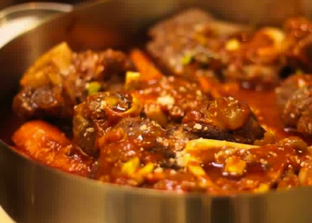

- RECIPES
- EPISODE GUIDE
MORE FROM THE SHOW
MOROCCAN- SPICED OSSO BUCO
Here's how to make the dish
- Season your kenchi beef with salt and pepper. Boil in a pot filled with 7 to 10 cups of water for 2 hours. Then, remove meat and bones from stock. Set aside. Save stock.
- In a large pan, sautee in olive oil the following: garlic, onions, carrots, celery, bay leaf, tomato sauce &tomato paste, cinnamon and paprika. Bring to simmer then add red wine.
- Place rested and pre-cooked beef on top of simmering liquid .
- Add more red wine to create more sauce. Cover pan and let cook for another 20 minutes over medium heat.
- To serve.
From my kitchen to yours with love, Mwahhh! -S
Ingredients:
- 3 kl. kenchi beef (osso buco)
- 8 pcs. carrots, chopped lengthwise
- 1/4 cup garlic, chopped
- 1/4 cup onions, chopped
- 2 cups celery, chopped
- 1/2 cup red wine
- 1/2 cup olive oil
- 3 cups tomato sauce
- 2 tbsp. tomato paste
- 1 tsp. cinnamon
- 1 tsp. paprika
- 1 bayleaf